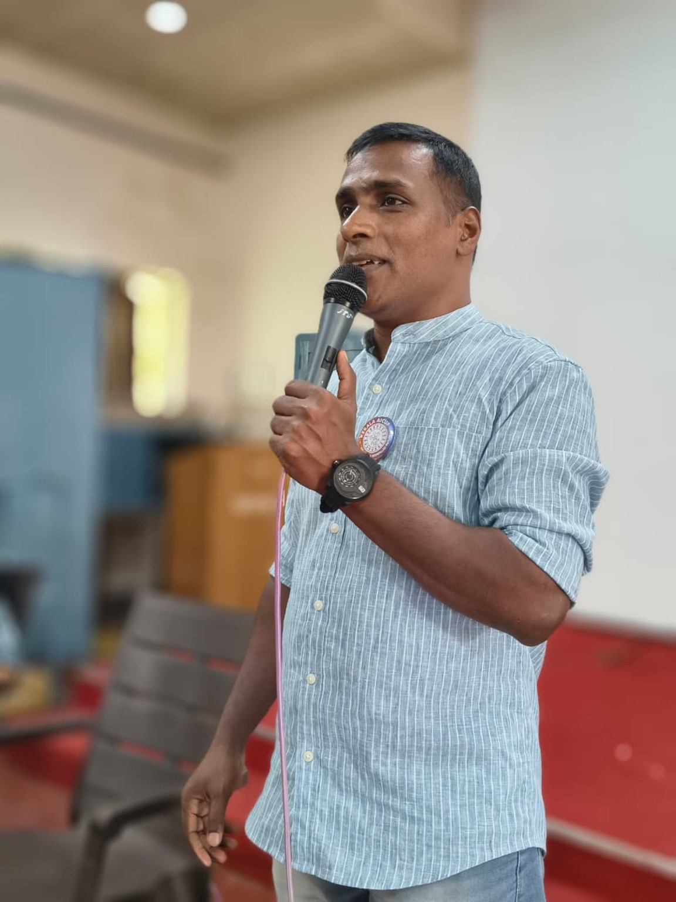

Assistant Professor – Hotel Management | Hospitality Educator | Mentor | Motivational Speaker
A hospitality-management educator committed to practical learning, student development, professional skills, mentoring and industry-oriented hospitality education.
Abhilash P Dominic is an Assistant Professor in the Department of Hotel Management at Naipunnya School of Management, Cherthala, Kerala. His work combines hospitality education, practical training, student mentoring and experiential learning.
He is actively involved in academic activities, student development programmes, hospitality events, competitions, extension activities, industry exposure and institutional initiatives. His teaching approach emphasizes the connection between classroom knowledge and real-world hospitality practice.
He believes that successful hospitality professionals need more than technical knowledge: they also need communication, confidence, discipline, teamwork, empathy, creativity and a genuine spirit of service.
Supports students through academic coordination, mentoring, practical hospitality training, professional-skills development and participation in academic and co-curricular activities.
Promotes learning experiences that connect hospitality theory with practical operations, industry exposure, competitions, events and professional workplace expectations.
Encourages communication, leadership, teamwork, confidence, creativity, discipline and service-oriented values among hospitality students.
Interested in technology-enabled and sustainable hospitality concepts, including personalized food experiences and responsible tourism initiatives.
Abhilash P Dominic also engages in motivational and student-development sessions, with a focus on confidence, positive attitude, professional behaviour, communication, leadership and personal growth.
Speaking themes: Student Motivation · Career Readiness · Hospitality Professionalism · Communication Skills · Leadership · Workplace Etiquette · Positive Attitude
Abhilash P Dominic
Assistant Professor, Department of Hotel Management
Naipunnya School of Management, Cherthala, Kerala
For professional invitations, academic collaboration, hospitality training and speaking engagements, please use the official institutional contact details or professional profile.